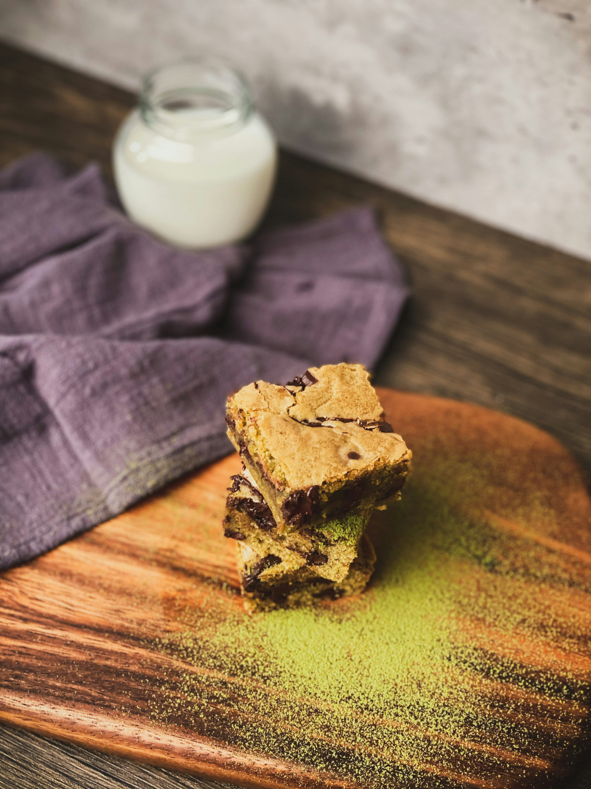

Chickpea Blondies
Home

Description
This is an easy flourless chocolate chip chickpea blondie recipe. No one can taste that they are made
with chickpeas instead of flour. They turn out soft and fudgy, and even sneak in some extra fiber!
The best part is that the chickpea cookie dough is amazing and you can eat it with a spoon! This recipe can also be
made with white beans (cannellini beans).
Ingredients
- 1 can (15 ounces) chickpeas, rinsed and drained
- 1/2 cup natural peanut butter (or almond butter)
- 1/3 cup maple syrup or agave nectar (you can use honey too if not vegan)
- 2 tsp vanilla
- 1/2 tsp salt
- 1/4 tsp baking powder
- 1/4 tsp baking soda
- 1/3 cup + 2 tbsp chocolate chips
- Course sea salt for sprinkling
Steps
- Preheat oven to 350F/175C and spray 8x8 inch pan with nonstick cooking spray
- In a food processor, add all ingredients except chocolate chips until the batter is smooth
- Fold in 1/3 cup of chocolate chips
- Spread batter evenly in prepared pan then sprinkle 2 tbsp of chocolate chips on top
- Bake for 20-25 minutes or until toothpick comes out clean and the edges are a tiny bit brown
- Cool pan for 20 minutes on wire rack
- Sprinkle with sea salt then cut into squares
- Store covered in teh fridge for 3-5 days
Recipe from Ambitious Kitchen